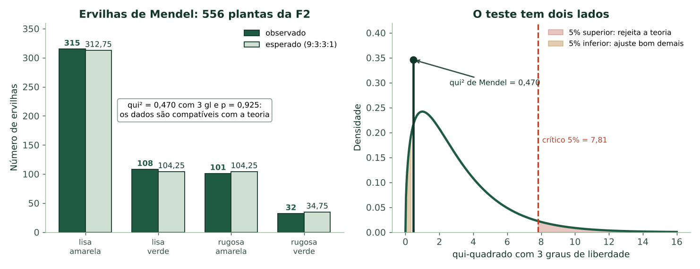
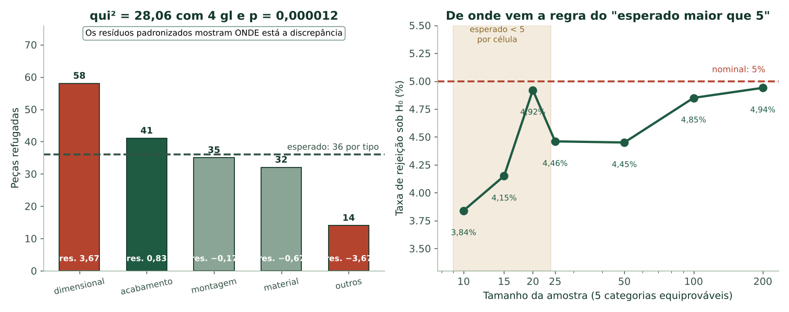

Qui-quadrado de aderência
Verifica se as frequências observadas em categorias são compatíveis com as proporções que uma hipótese ou uma distribuição prevê.
Comece por aqui
Uma teoria genética prevê que quatro tipos de ervilha apareçam na proporção 9:3:3:1. Um setor de qualidade supõe que cinco tipos de defeito sejam igualmente frequentes. Um engenheiro quer saber se o número de falhas por turno segue uma distribuição de Poisson. As três perguntas têm a mesma forma: as frequências observadas são compatíveis com as que a hipótese prevê? O teste qui-quadrado de aderência responde a todas elas com a mesma conta.
Karl Pearson publicou o teste em 1900, e ele é geralmente considerado o marco inicial da inferência estatística como disciplina. A ideia de comparar o observado com o esperado numa escala que não depende da unidade de medida — dividindo o quadrado do desvio pela própria frequência esperada — está por trás de boa parte do que veio depois.
O que é o teste
Cada categoria contribui com \((O-E)^2/E\): o quadrado do desvio, normalizado pela frequência que se esperaria. A divisão por \(E\) é o que torna as contribuições comparáveis — um desvio de 10 unidades é muito numa categoria em que se esperavam 20 e pouco numa em que se esperavam 500. A soma dessas contribuições segue, aproximadamente, uma distribuição qui-quadrado.

Em 1936, Fisher somou os qui-quadrados de todos os experimentos de Mendel e obteve 41,6 com 84 graus de liberdade. A probabilidade de um ajuste tão bom ou melhor, se os dados fossem realmente aleatórios, é de 0,00004 — cerca de uma em 25 mil. A conclusão de Fisher foi que os dados haviam sido, de algum modo, ajustados à expectativa. O episódio continua debatido, mas a lição metodológica permanece: um qui-quadrado muito pequeno também é um resultado a ser explicado.
Pressupostos e como verificá-los
| Pressuposto | Por que importa | Como verificar |
|---|---|---|
| Observações independentes | Cada unidade entra em uma única categoria, sem influenciar as demais. | Delineamento; cuidado com medidas repetidas no mesmo indivíduo. |
| Categorias mutuamente exclusivas e exaustivas | Cada unidade cai em exatamente uma. | Definição das categorias. |
| Frequências esperadas suficientemente grandes | A aproximação qui-quadrado é assintótica. | Regra prática: nenhuma esperada abaixo de 1 e no máximo 20% delas abaixo de 5. O R avisa quando falha. |
| Contagens, não proporções nem percentagens | A conta precisa dos valores absolutos. | Use as frequências brutas. |
| Graus de liberdade corrigidos pelos parâmetros estimados | Estimar um parâmetro dos próprios dados consome um grau de liberdade. | Conte quantos parâmetros foram estimados. |
| Hipótese especificada antes de ver os dados | Ajustar a hipótese aos dados invalida o teste. | Plano de análise. |
Ela não vem de um teorema, e sim de simulação. Com cinco categorias equiprováveis, o teste rejeita em 3,84% das vezes quando n = 10 (esperado 2 por célula), oscila em torno de 4,2% a 4,9% entre n = 15 e n = 25, e converge para cerca de 4,9% a partir de n = 100. A regra marca o ponto em que a aproximação deixa de ser visivelmente conservadora.
Hipóteses e estatística de teste
Em que:
- \(c\)
- número de categorias
- \(O_i\)
- frequência observada na categoria i
- \(E_i\)
- frequência esperada sob a hipótese nula
- \(n\)
- total de observações
- \(s\)
- número de parâmetros estimados a partir dos dados
- \(r_i\)
- resíduo padronizado da categoria i
- \(w\)
- w de Cohen: 0,1 pequeno; 0,3 médio; 0,5 grande
Exemplo numérico, passo a passo
| Categoria | Observado | Esperado | O − E | (O−E)²/E | Resíduo |
|---|---|---|---|---|---|
| lisa amarela | 315 | 312,75 | +2,25 | 0,01619 | +0,127 |
| lisa verde | 108 | 104,25 | +3,75 | 0,13489 | +0,367 |
| rugosa amarela | 101 | 104,25 | −3,25 | 0,10132 | −0,318 |
| rugosa verde | 32 | 34,75 | −2,75 | 0,21763 | −0,467 |
| total | 556 | 556,00 | 0 | 0,47002 | — |
A frequência esperada da primeira categoria é \(556\times9/16=312{,}75\); a da última, \(556\times1/16=34{,}75\).
Com \(c=4\) categorias e nenhum parâmetro estimado, \(\text{gl}=4-1=3\) e \(p=P\!\left(\chi^2_3>0{,}470\right)=0{,}9254\).
Os dados são perfeitamente compatíveis com a razão 9:3:3:1. Isso não prova a teoria: o teste de aderência nunca prova a hipótese nula. Com n = 556, ele distingue 9:3:3:1 de 7:3:3:1 (p = 2 × 10⁻⁴), mas não de 8,5:3,2:3,2:1,1 (p = 0,78).
Quando o parâmetro é estimado dos dados
Ao ajustar uma distribuição — Poisson, normal, binomial — é preciso estimar os seus parâmetros. Cada parâmetro estimado consome um grau de liberdade. Isso é fácil de esquecer, e a função chisq.test() do R não faz essa correção automaticamente: ela sempre usa \(c-1\).
Duzentos corpos-ano do exército prussiano registraram 122 mortes, de modo que \(\hat\lambda=122/200=0{,}61\).
| Mortes | 0 | 1 | 2 | 3 | 4 ou mais |
|---|---|---|---|---|---|
| Observado | 109 | 65 | 22 | 3 | 1 |
| Esperado | 108,670 | 66,289 | 20,218 | 4,111 | 0,712 |
A última categoria tem esperada 0,712, abaixo de 1: a regra prática manda agrupar. Juntando "3 ou mais":
| Mortes | 0 | 1 | 2 | 3 ou mais |
|---|---|---|---|---|
| Observado | 109 | 65 | 22 | 4 |
| Esperado | 108,670 | 66,289 | 20,218 | 4,823 |
As mortes por coice são compatíveis com um processo de Poisson. Se os graus de liberdade não fossem corrigidos, o valor-p sairia como 0,956 — mais otimista do que deveria.
Propriedades
- \(X^2\geq0\), com valor 0 quando o observado coincide exatamente com o esperado.
- A aproximação melhora com n; com esperados muito pequenos, use o valor-p simulado ou o teste multinomial exato.
- Os resíduos de Pearson somam zero e indicam a direção e a magnitude de cada discrepância; valores acima de 2 em módulo merecem atenção.
- A razão de verossimilhanças \(G^2=2\sum O_i\ln(O_i/E_i)\) é uma alternativa assintoticamente equivalente.
- Para duas categorias, equivale ao teste de proporção; o teste exato binomial é preferível com n pequeno.
- O teste é bilateral na escala das frequências, mas unilateral à direita na escala de \(X^2\) — exceto quando se investiga um ajuste bom demais.
Como interpretar os resultados
| Elemento | O que informa | Cuidado |
|---|---|---|
| X-squared | A soma das contribuições. | Sem direção: só a magnitude. |
| df | Categorias − 1 − parâmetros estimados. | O R não desconta os estimados. |
| p-value | Evidência contra a hipótese. | Um p grande não prova a hipótese. |
| expected | Frequências sob H₀. | Confira se nenhuma é pequena demais. |
| residuals | Resíduos de Pearson. | É aqui que se vê ONDE está a discrepância. |
| w de Cohen | Tamanho de efeito. | Com n grande, qualquer desvio vira significativo. |
Reporte: X², graus de liberdade, valor-p, a menor frequência esperada, o tamanho de efeito e os resíduos das categorias discrepantes. Quando houver esperados pequenos, informe também o valor-p simulado.
Como executar no R e em Python
Onde executar o código em Python
Não é preciso instalar nada: o Google Colab é um computador na nuvem, gratuito, que executa Python pelo navegador e já traz as bibliotecas usadas aqui (numpy, scipy e matplotlib).
chisq.test() está no pacote stats, já instalado com o R. Sem o argumento p, testa a hipótese de que todas as categorias são equiprováveis; com ele, testa as proporções informadas. O objeto devolvido traz $expected, $residuals (resíduos de Pearson) e $stdres. O argumento simulate.p.value = TRUE calcula o valor-p por reamostragem, dispensando a aproximação. Atenção: os graus de liberdade são sempre \(c-1\) — ao ajustar uma distribuição com parâmetros estimados, calcule o valor-p manualmente com pchisq().
chisq.test(observado, p = proporcoes)
chisq.test(defeitos, simulate.p.value = TRUE, B = 100000)
Exemplo de aplicação
Contexto dos dados
A ficha percorre três situações. A primeira usa os dados de ervilha publicados por Mendel em 1866, em que a teoria especifica as proporções. A segunda ajusta uma distribuição de Poisson às mortes por coice de cavalo registradas por Bortkiewicz no exército prussiano entre 1875 e 1894, com o parâmetro estimado dos próprios dados. A terceira é um exemplo fictício de controle de qualidade, em que a hipótese é rejeitada e os resíduos indicam onde.
Código em R
# Qui-quadrado de aderência: exemplo completo ----
# Pacotes: stats (base). Opcionais: vcd (gráficos), DescTools
# install.packages(c("vcd", "DescTools"))
# PARTE 1 - proporções dadas pela teoria: as ervilhas de Mendel
observado <- c("lisa amarela" = 315, "lisa verde" = 108,
"rugosa amarela" = 101, "rugosa verde" = 32)
proporcoes <- c(9, 3, 3, 1) / 16
chisq.test(observado, p = proporcoes)
teste <- chisq.test(observado, p = proporcoes)
teste$expected # frequências esperadas
teste$residuals # resíduos de Pearson: (O - E)/raiz(E)
teste$residuals^2 # contribuição de cada categoria
sum(teste$residuals^2) # = a estatística
# O teste tem DOIS lados: valores muito pequenos indicam ajuste bom demais
pchisq(teste$statistic, teste$parameter) # probabilidade de um ajuste PIOR
pchisq(41.6, 84) # a crítica de Fisher a todos os dados de Mendel
# PARTE 2 - ajuste de uma DISTRIBUIÇÃO, com parâmetro estimado
# Mortes por coice de cavalo no exército prussiano (Bortkiewicz, 1898)
mortes <- 0:4
corpos <- c(109, 65, 22, 3, 1)
n <- sum(corpos)
(lambda <- sum(mortes * corpos) / n) # parâmetro ESTIMADO dos dados
esperado <- c(dpois(0:3, lambda), ppois(3, lambda, lower.tail = FALSE)) * n
round(esperado, 3)
min(esperado) # abaixo de 1: é preciso agrupar
# Agrupando a cauda e corrigindo os graus de liberdade
obs2 <- c(109, 65, 22, 4)
esp2 <- c(dpois(0:2, lambda), ppois(2, lambda, lower.tail = FALSE)) * n
X2 <- sum((obs2 - esp2)^2 / esp2)
gl <- length(obs2) - 1 - 1 # UM a menos: lambda foi estimado
c(qui_quadrado = X2, gl = gl, p = pchisq(X2, gl, lower.tail = FALSE))
# ATENÇÃO: chisq.test() NÃO desconta o parâmetro estimado. Com
# chisq.test(obs2, p = esp2/n) o valor-p sairia errado (gl = 3 em vez de 2).
# PARTE 3 - um caso que rejeita, com dados fictícios
defeitos <- c(dimensional = 58, acabamento = 41, montagem = 35,
material = 32, outros = 14)
t3 <- chisq.test(defeitos) # H0: as cinco categorias são equiprováveis
t3
t3$expected
round(t3$residuals, 3) # ONDE está a discrepância
sqrt(t3$statistic / sum(defeitos)) # w de Cohen
# Valor-p por simulação, sem depender da aproximação
chisq.test(defeitos, simulate.p.value = TRUE, B = 100000)
# Intervalos de confiança simultâneos para as proporções (método de Goodman)
library(DescTools)
MultinomCI(defeitos, conf.level = 0.95, method = "goodman")
# Gráficos
par(mfrow = c(1, 2))
bp <- barplot(rbind(defeitos, t3$expected), beside = TRUE, col = c("gray40", "gray85"),
legend.text = c("observado", "esperado"), ylab = "Peças refugadas")
barplot(t3$residuals, col = ifelse(abs(t3$residuals) > 2, "firebrick", "gray70"),
ylab = "Resíduo padronizado", las = 2)
abline(h = c(-2, 2), lty = 2)
par(mfrow = c(1, 1))
A mesma análise em Python, com os resultados
Cole o código em um notebook do Google Colab ↗ e execute com Shift+Enter. Os valores abaixo são a saída desse código.
# Bibliotecas: numpy, scipy e matplotlib (já instaladas no Google Colab)
import numpy as np
from scipy import stats
# ===================================================================
# PARTE 1 - proporções especificadas pela teoria: as ervilhas de Mendel
# F2 do cruzamento dibrido; a teoria prevê a razão 9:3:3:1.
categorias = ["lisa amarela", "lisa verde", "rugosa amarela", "rugosa verde"]
obs = np.array([315, 108, 101, 32])
razao = np.array([9, 3, 3, 1])
n = obs.sum()
esp = n * razao / razao.sum()
print("Ervilhas de Mendel (1866), F2 do cruzamento dibrido")
print(f"{'categoria':<18}{'observado':>10}{'esperado':>11}{'O - E':>9}{'(O-E)²/E':>11}")
for c, o, e in zip(categorias, obs, esp):
print(f"{c:<18}{o:10d}{e:11.2f}{o-e:9.2f}{(o-e)**2/e:11.5f}")
qui = ((obs - esp)**2 / esp).sum()
gl = len(obs) - 1
print(f"{'total':<18}{n:10d}{esp.sum():11.2f}{0:9.2f}{qui:11.5f}")
print(f"\nqui-quadrado = {qui:.5f} | gl = {gl} | p-valor = {stats.chi2.sf(qui, gl):.5f}")
print(f"scipy: {stats.chisquare(obs, esp)}")
print(f"Menor frequência esperada: {esp.min():.2f} (a regra prática pede pelo menos 5)")
print("Resíduos padronizados (O - E)/raiz(E):", np.round((obs - esp)/np.sqrt(esp), 4))
# 1b. O valor-p grande: o que ele significa e o que não significa
print("\nUm valor-p de 0,925 NÃO prova que a teoria 9:3:3:1 está certa.")
print("Ele diz apenas que os dados são compatíveis com ela. Veja o que aconteceria")
print("se a razão verdadeira fosse ligeiramente diferente:")
for alt, nome in [(np.array([9,3,3,1]), "9:3:3:1 (a hipótese)"),
(np.array([8.5,3.2,3.2,1.1]), "8,5:3,2:3,2:1,1"),
(np.array([7,3,3,1]), "7:3:3:1"),
(np.array([1,1,1,1]), "1:1:1:1")]:
ea = n*alt/alt.sum(); qa = ((obs-ea)**2/ea).sum()
print(f" contra {nome:<24} qui² = {qa:9.3f} | p = {stats.chi2.sf(qa, gl):.3e}")
print("Com n = 556 o teste distingue bem 9:3:3:1 de 7:3:3:1, mas não de 8,5:3,2:3,2:1,1.")
# 1c. A crítica de Fisher: um ajuste bom demais
print("\nA crítica de R. A. Fisher (1936): somando os qui-quadrados de TODOS os")
print("experimentos de Mendel, ele obteve 41,6 com 84 graus de liberdade.")
print(f"P(qui²(84) <= 41,6) = {stats.chi2.cdf(41.6, 84):.5f}")
print("Ou seja, um ajuste tão bom ou melhor ocorreria em cerca de 1 em 25.000 repetições.")
print("O teste de aderência tem, portanto, DOIS lados: valores grandes indicam")
print("incompatibilidade com a teoria; valores muito pequenos indicam dados bons demais.")
# ===================================================================
# PARTE 2 - ajuste de uma DISTRIBUIÇÃO, com parâmetro estimado
print("\n" + "=" * 70)
print("Mortes por coice de cavalo no exército prussiano (Bortkiewicz, 1898)")
print("200 observações corpo-ano; a hipótese é a distribuição de Poisson.")
obs2 = np.array([109, 65, 22, 3, 1])
x = np.arange(5); n2 = obs2.sum()
lam = (obs2 * x).sum() / n2
print(f"\nTotal de mortes = {int((obs2*x).sum())} em {n2} corpos-ano -> lambda estimado = {lam:.4f}")
esp2 = np.array([stats.poisson.pmf(i, lam) * n2 for i in range(4)] + [stats.poisson.sf(3, lam) * n2])
rot = ["0 mortes", "1 morte", "2 mortes", "3 mortes", "4 ou mais"]
print(f"{'categoria':<14}{'observado':>10}{'esperado':>11}{'(O-E)²/E':>11}")
for r, o, e in zip(rot, obs2, esp2):
print(f"{r:<14}{o:10d}{e:11.3f}{(o-e)**2/e:11.5f}")
q2 = ((obs2 - esp2)**2 / esp2).sum()
print(f"\nqui-quadrado = {q2:.4f}")
print(f"Graus de liberdade = {len(obs2)} - 1 - 1 = {len(obs2)-2} (um a menos, porque lambda foi ESTIMADO)")
print(f"p-valor = {stats.chi2.sf(q2, len(obs2)-2):.4f}")
print(f"Menor frequência esperada = {esp2.min():.3f}: abaixo de 5, e até abaixo de 1.")
print("\nAgrupando as categorias de cauda, como a regra prática recomenda:")
obs3 = np.array([109, 65, 22, 4]); esp3 = np.array(list(esp2[:3]) + [esp2[3:].sum()])
rot3 = ["0 mortes", "1 morte", "2 mortes", "3 ou mais"]
for r, o, e in zip(rot3, obs3, esp3):
print(f" {r:<12}{o:6d}{e:10.3f}{(o-e)**2/e:10.5f}")
q3 = ((obs3 - esp3)**2 / esp3).sum()
print(f" qui-quadrado = {q3:.4f} | gl = {len(obs3)-2} | p-valor = {stats.chi2.sf(q3, len(obs3)-2):.4f}")
print(f" menor esperado = {esp3.min():.3f}: agora dentro da regra.")
print("Conclusão: as mortes por coice são compatíveis com um processo de Poisson.")
# ===================================================================
# PARTE 3 - um caso que REJEITA, e o que fazer com esperados pequenos
print("\n" + "=" * 70)
print("Dados fictícios: 180 peças refugadas em uma linha, por tipo de defeito.")
print("A hipótese do setor de qualidade é que os cinco tipos são equiprováveis.")
tipos = ["dimensional", "acabamento", "montagem", "material", "outros"]
obs4 = np.array([58, 41, 35, 32, 14])
n4 = obs4.sum(); esp4 = np.full(5, n4/5)
print(f"{'defeito':<14}{'observado':>10}{'esperado':>10}{'(O-E)²/E':>11}{'resíduo pad.':>14}")
for t, o, e in zip(tipos, obs4, esp4):
print(f"{t:<14}{o:10d}{e:10.1f}{(o-e)**2/e:11.4f}{(o-e)/np.sqrt(e):14.3f}")
q4 = ((obs4 - esp4)**2 / esp4).sum()
print(f"\nqui-quadrado = {q4:.4f} | gl = 4 | p-valor = {stats.chi2.sf(q4, 4):.5f}")
print(f"scipy: {stats.chisquare(obs4)}")
print("Os resíduos padronizados dizem ONDE está a discrepância: o defeito dimensional")
print(f"contribui com {(obs4[0]-esp4[0])**2/esp4[0]:.3f} dos {q4:.3f}, "
f"e 'outros' com {(obs4[4]-esp4[4])**2/esp4[4]:.3f}.")
print(f"Resíduos acima de 2 em valor absoluto merecem atenção: "
f"{[t for t,r in zip(tipos,(obs4-esp4)/np.sqrt(esp4)) if abs(r)>2]}")
# 3b. Tamanho de efeito e poder
w = np.sqrt(q4 / n4)
print(f"\nTamanho de efeito w de Cohen = raiz(qui²/n) = {w:.4f}")
print(" (0,1 pequeno; 0,3 médio; 0,5 grande)")
# 3c. Valor-p por simulação: aqui, só para conferir a aproximação
print("\nO valor-p também pode ser obtido por simulação, sem recorrer à aproximação:")
rng = np.random.default_rng(2026)
B = 100000
sim = rng.multinomial(n4, np.full(5, 0.2), size=B)
qsim = (((sim - esp4)**2) / esp4).sum(axis=1)
print(f" valor-p simulado ({B} reamostragens) = {(1 + (qsim >= q4).sum()) / (B + 1):.6f}")
print(f" valor-p pela aproximação qui-quadrado = {stats.chi2.sf(q4, 4):.6f}")
print(" No R: chisq.test(obs, simulate.p.value = TRUE, B = 100000)")
print("Aqui os dois coincidem na prática, porque todas as frequências esperadas são 36.")
# 3d. Quando a aproximação falha: a taxa de erro real com esperados pequenos
print("\nA aproximação qui-quadrado é assintótica. Para ver quando ela falha, basta")
print("simular sob a hipótese nula e contar quantas vezes ela rejeita a 5%:")
print(" n esperado por célula taxa de rejeição a 5% (alvo: 5%)")
for n_ in (10, 15, 20, 25, 50, 100, 200):
e_ = np.full(5, n_/5)
sim_ = rng.multinomial(n_, np.full(5, 0.2), size=40000)
q_ = (((sim_ - e_)**2)/e_).sum(axis=1)
print(f" {n_:4d} {n_/5:6.1f} {100*(q_ > stats.chi2.ppf(0.95, 4)).mean():6.2f}%")
print("Com n = 10 (esperado 2 por célula) o teste rejeita menos que o nominal, e com")
print("n = 15 e 20 ele oscila: a distribuição discreta não se ajusta bem à contínua.")
print("A partir de cerca de 25 observações, ou seja 5 por célula, a aproximação fica boa.")
print("É dessa simulação que vem a regra prática, e não de um teorema.")
Resultados da execução
Ervilhas de Mendel (1866), F2 do cruzamento dibrido categoria observado esperado O - E (O-E)²/E lisa amarela 315 312.75 2.25 0.01619 lisa verde 108 104.25 3.75 0.13489 rugosa amarela 101 104.25 -3.25 0.10132 rugosa verde 32 34.75 -2.75 0.21763 total 556 556.00 0.00 0.47002 qui-quadrado = 0.47002 | gl = 3 | p-valor = 0.92543 scipy: Power_divergenceResult(statistic=np.float64(0.4700239808153477), pvalue=np.float64(0.925425895103616)) Menor frequência esperada: 34.75 (a regra prática pede pelo menos 5) Resíduos padronizados (O - E)/raiz(E): [ 0.1272 0.3673 -0.3183 -0.4665] Um valor-p de 0,925 NÃO prova que a teoria 9:3:3:1 está certa. Ele diz apenas que os dados são compatíveis com ela. Veja o que aconteceria se a razão verdadeira fosse ligeiramente diferente: contra 9:3:3:1 (a hipótese) qui² = 0.470 | p = 9.254e-01 contra 8,5:3,2:3,2:1,1 qui² = 3.345 | p = 3.414e-01 contra 7:3:3:1 qui² = 10.228 | p = 1.673e-02 contra 1:1:1:1 qui² = 322.518 | p = 1.329e-69 Com n = 556 o teste distingue bem 9:3:3:1 de 7:3:3:1, mas não de 8,5:3,2:3,2:1,1. A crítica de R. A. Fisher (1936): somando os qui-quadrados de TODOS os experimentos de Mendel, ele obteve 41,6 com 84 graus de liberdade. P(qui²(84) <= 41,6) = 0.00003 Ou seja, um ajuste tão bom ou melhor ocorreria em cerca de 1 em 25.000 repetições. O teste de aderência tem, portanto, DOIS lados: valores grandes indicam incompatibilidade com a teoria; valores muito pequenos indicam dados bons demais. ====================================================================== Mortes por coice de cavalo no exército prussiano (Bortkiewicz, 1898) 200 observações corpo-ano; a hipótese é a distribuição de Poisson. Total de mortes = 122 em 200 corpos-ano -> lambda estimado = 0.6100 categoria observado esperado (O-E)²/E 0 mortes 109 108.670 0.00100 1 morte 65 66.289 0.02506 2 mortes 22 20.218 0.15705 3 mortes 3 4.111 0.30025 4 ou mais 1 0.712 0.11657 qui-quadrado = 0.5999 Graus de liberdade = 5 - 1 - 1 = 3 (um a menos, porque lambda foi ESTIMADO) p-valor = 0.8964 Menor frequência esperada = 0.712: abaixo de 5, e até abaixo de 1. Agrupando as categorias de cauda, como a regra prática recomenda: 0 mortes 109 108.670 0.00100 1 morte 65 66.289 0.02506 2 mortes 22 20.218 0.15705 3 ou mais 4 4.823 0.14042 qui-quadrado = 0.3235 | gl = 2 | p-valor = 0.8506 menor esperado = 4.823: agora dentro da regra. Conclusão: as mortes por coice são compatíveis com um processo de Poisson. ====================================================================== Dados fictícios: 180 peças refugadas em uma linha, por tipo de defeito. A hipótese do setor de qualidade é que os cinco tipos são equiprováveis. defeito observado esperado (O-E)²/E resíduo pad. dimensional 58 36.0 13.4444 3.667 acabamento 41 36.0 0.6944 0.833 montagem 35 36.0 0.0278 -0.167 material 32 36.0 0.4444 -0.667 outros 14 36.0 13.4444 -3.667 qui-quadrado = 28.0556 | gl = 4 | p-valor = 0.00001 scipy: Power_divergenceResult(statistic=np.float64(28.055555555555557), pvalue=np.float64(1.215369356340457e-05)) Os resíduos padronizados dizem ONDE está a discrepância: o defeito dimensional contribui com 13.444 dos 28.056, e 'outros' com 13.444. Resíduos acima de 2 em valor absoluto merecem atenção: ['dimensional', 'outros'] Tamanho de efeito w de Cohen = raiz(qui²/n) = 0.3948 (0,1 pequeno; 0,3 médio; 0,5 grande) O valor-p também pode ser obtido por simulação, sem recorrer à aproximação: valor-p simulado (100000 reamostragens) = 0.000020 valor-p pela aproximação qui-quadrado = 0.000012 No R: chisq.test(obs, simulate.p.value = TRUE, B = 100000) Aqui os dois coincidem na prática, porque todas as frequências esperadas são 36. A aproximação qui-quadrado é assintótica. Para ver quando ela falha, basta simular sob a hipótese nula e contar quantas vezes ela rejeita a 5%: n esperado por célula taxa de rejeição a 5% (alvo: 5%) 10 2.0 3.84% 15 3.0 4.15% 20 4.0 4.92% 25 5.0 4.46% 50 10.0 4.45% 100 20.0 4.85% 200 40.0 4.94% Com n = 10 (esperado 2 por célula) o teste rejeita menos que o nominal, e com n = 15 e 20 ele oscila: a distribuição discreta não se ajusta bem à contínua. A partir de cerca de 25 observações, ou seja 5 por célula, a aproximação fica boa. É dessa simulação que vem a regra prática, e não de um teorema.

| Exemplo | X² | gl | p | Conclusão |
|---|---|---|---|---|
| Mendel, 9:3:3:1 | 0,47002 | 3 | 0,92543 | Compatível com a teoria. |
| Bortkiewicz, Poisson (5 categorias) | 0,5999 | 3 | 0,8964 | Esperada mínima de 0,712: agrupar. |
| Bortkiewicz, Poisson (agrupado) | 0,3235 | 2 | 0,8506 | Compatível com Poisson. |
| Defeitos, equiprobabilidade | 28,0556 | 4 | 0,0000122 | Rejeita. |
| Defeito | Observado | Esperado | (O−E)²/E | Resíduo |
|---|---|---|---|---|
| dimensional | 58 | 36,0 | 13,4444 | +3,667 |
| acabamento | 41 | 36,0 | 0,6944 | +0,833 |
| montagem | 35 | 36,0 | 0,0278 | −0,167 |
| material | 32 | 36,0 | 0,4444 | −0,667 |
| outros | 14 | 36,0 | 13,4444 | −3,667 |
| Elemento | Valor | Leitura |
|---|---|---|
| w de Cohen | 0,3948 | Efeito médio a grande. |
| Valor-p simulado (100 000 reamostragens) | 0,000020 | Confirma a aproximação (0,000012). |
| Categorias com resíduo acima de 2 | dimensional e outros | São elas que carregam o resultado. |
| Contribuição dessas duas | 26,89 dos 28,06 | 96% da estatística. |
Leitura do terceiro exemplo: os cinco tipos de defeito não ocorrem com a mesma frequência (p = 0,000012). Os resíduos mostram que o resultado não se distribui pelas cinco categorias: ele vem quase inteiramente de duas. O defeito dimensional aparece 58 vezes onde se esperariam 36, e a categoria "outros" aparece 14 vezes onde se esperariam 36. As três categorias intermediárias estão praticamente onde deveriam.
Essa é a diferença entre o teste e o diagnóstico. O valor-p diz que a hipótese de equiprobabilidade não se sustenta; os resíduos dizem o que fazer com essa informação — concentrar a investigação no processo de usinagem, que gera o defeito dimensional. Um teste significativo sem o exame dos resíduos é meia análise.
Sobre a regra do "esperado maior que 5"
A simulação da figura mostra de onde vem a recomendação. Com cinco categorias equiprováveis e todas as frequências esperadas iguais, a taxa de rejeição do teste sob a hipótese nula é de 3,84% com n = 10, sobe irregularmente entre n = 15 e n = 50, e só se estabiliza perto de 4,9% a partir de n = 100. O teste é conservador com amostras pequenas — rejeita menos do que deveria —, e a irregularidade vem do fato de uma distribuição discreta estar sendo aproximada por uma contínua.
Na prática: quando algum esperado ficar abaixo de 5, use simulate.p.value = TRUE ou agrupe categorias. A segunda opção custa graus de liberdade e informação, mas mantém a interpretação direta.
Erros comuns
| Erro | Como evitar |
|---|---|
| Aplicar o teste a proporções ou percentagens | Ele precisa das contagens absolutas. |
| Esquecer de descontar os parâmetros estimados | chisq.test() não faz isso; calcule com pchisq(). |
| Ignorar o aviso de esperados pequenos | Agrupe categorias ou use o valor-p simulado. |
| Concluir que a hipótese está certa quando p é grande | Ausência de evidência não é evidência de ausência. |
| Parar no valor-p sem olhar os resíduos | São eles que dizem ONDE está a discrepância. |
| Usar com observações não independentes | Medidas repetidas no mesmo indivíduo violam o pressuposto. |
| Definir as categorias depois de ver os dados | Isso invalida o teste. |
| Esquecer que n grande torna tudo significativo | Reporte o tamanho de efeito. |
Alternativas e fluxo de trabalho
| Procedimento | Quando preferir |
|---|---|
| Teste multinomial exato | Amostras pequenas; disponível em EMT::multinomial.test. |
| Valor-p por simulação | Esperados pequenos, sem agrupar categorias. |
| Razão de verossimilhanças G² | Equivalente assintótico; preferido em modelos log-lineares. |
| Teste binomial exato | Apenas duas categorias. |
| Kolmogorov–Smirnov | Variável contínua, sem categorizar. |
| Anderson–Darling | Variável contínua, com ênfase nas caudas. |
| Shapiro–Wilk | Especificamente para a hipótese de normalidade. |
| Modelo log-linear | Mais de uma variável categórica, com estrutura a modelar. |
- Garanta que as categorias são exclusivas e exaustivas e que as observações são independentes.
- Especifique as proporções esperadas antes de ver os dados.
- Calcule as frequências esperadas e verifique se são grandes o bastante.
- Se um parâmetro foi estimado, desconte um grau de liberdade.
- Aplique o teste e reporte X², gl e valor-p.
- Examine os resíduos padronizados para localizar a discrepância.
- Informe o tamanho de efeito, sobretudo com amostras grandes.
Referências desta ficha
- PEARSON, Karl. On the criterion that a given system of deviations from the probable in the case of a correlated system of variables is such that it can be reasonably supposed to have arisen from random sampling. Philosophical Magazine, Series 5, v. 50, n. 302, p. 157-175, 1900.
- FISHER, Ronald A. The conditions under which chi-square measures the discrepancy between observation and hypothesis. Journal of the Royal Statistical Society, v. 87, n. 3, p. 442-450, 1924.
- FISHER, Ronald A. Has Mendel’s work been rediscovered? Annals of Science, v. 1, n. 2, p. 115-137, 1936.
- MENDEL, Gregor. Versuche über Pflanzen-Hybriden. Verhandlungen des naturforschenden Vereines in Brünn, v. 4, p. 3-47, 1866.
- BORTKIEWICZ, Ladislaus von. Das Gesetz der kleinen Zahlen. Leipzig: Teubner, 1898.
- COCHRAN, William G. The chi-square test of goodness of fit. The Annals of Mathematical Statistics, v. 23, n. 3, p. 315-345, 1952.
- FRANKLIN, Allan et al. Ending the Mendel-Fisher controversy. Pittsburgh: University of Pittsburgh Press, 2008.
- AGRESTI, Alan. Categorical data analysis. 3. ed. Hoboken: Wiley, 2013.
- AGRESTI, Alan. An introduction to categorical data analysis. 3. ed. Hoboken: Wiley, 2019.
- FLEISS, Joseph L.; LEVIN, Bruce; PAIK, Myunghee Cho. Statistical methods for rates and proportions. 3. ed. Hoboken: Wiley, 2003.
- COHEN, Jacob. Statistical power analysis for the behavioral sciences. 2. ed. Hillsdale: Lawrence Erlbaum, 1988.
- R CORE TEAM. R: a language and environment for statistical computing. Vienna: R Foundation for Statistical Computing, 2026. Disponível em: https://www.r-project.org/. (Função
chisq.test, pacotestats.) - SIGNORELL, Andri et al. DescTools: tools for descriptive statistics. R package. Disponível em: https://CRAN.R-project.org/package=DescTools. (Função
MultinomCI.) - POSIT TEAM. RStudio: integrated development environment for R. Boston: Posit Software, PBC. Disponível em: https://posit.co/download/rstudio-desktop/.
- VIRTANEN, Pauli et al. SciPy 1.0: fundamental algorithms for scientific computing in Python. Nature Methods, v. 17, p. 261-272, 2020. DOI: 10.1038/s41592-019-0686-2. (Funções do módulo
scipy.stats.) - HARRIS, Charles R. et al. Array programming with NumPy. Nature, v. 585, p. 357-362, 2020. DOI: 10.1038/s41586-020-2649-2.
- HUNTER, John D. Matplotlib: a 2D graphics environment. Computing in Science & Engineering, v. 9, n. 3, p. 90-95, 2007.
- GOOGLE. Google Colaboratory. Disponível em: https://colab.research.google.com/.
- As figuras desta ficha foram elaboradas pelo autor.

Prof. Dr. Cássius Henrique Xavier Oliveira
Professor · ICTIN/UFLA · Estatística, Confiabilidade e Ciência de Dados.
Conheça minha trajetória e projetos →